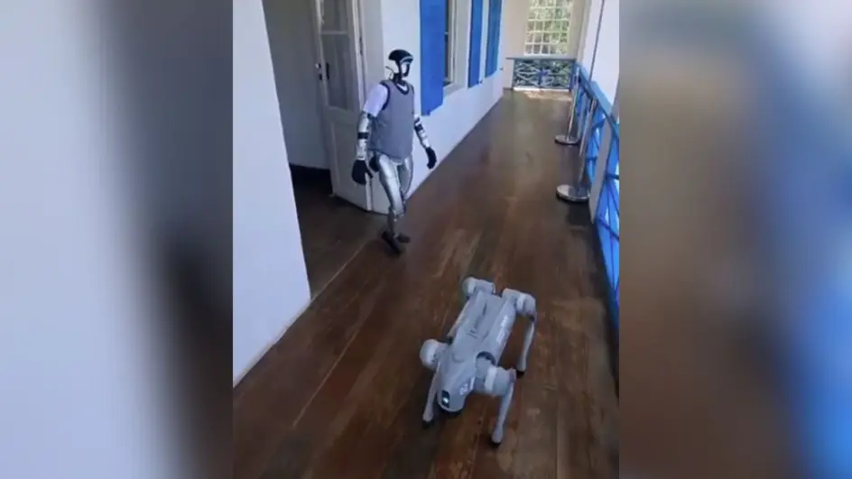
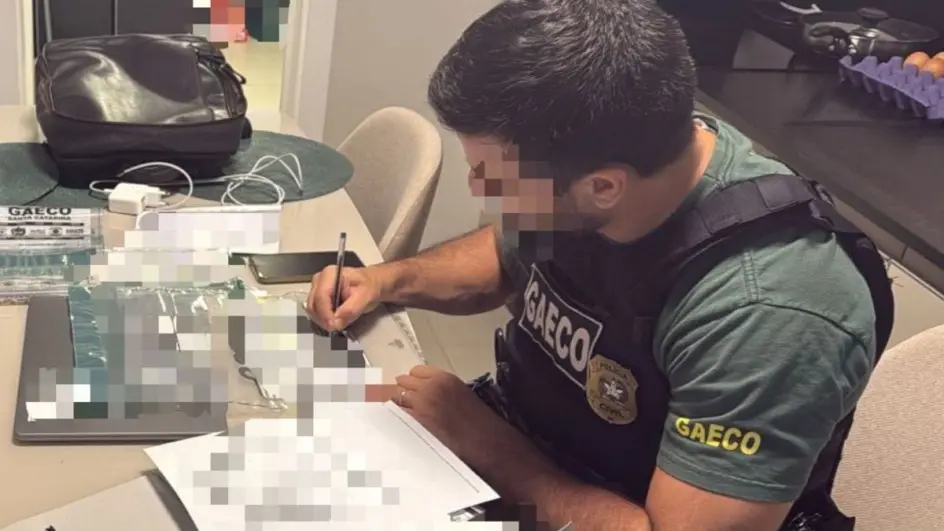

Fique por dentro das últimas notícias da cidade de Joinville e da região, com análises, resultados e histórias inspiradoras de moradores e instituições. Desde os grandes eventos locais até os acontecimentos cotidianos, nossa cobertura informativa traz tudo o que você precisa saber para acompanhar o ritmo acelerado da vida em Joinville.

